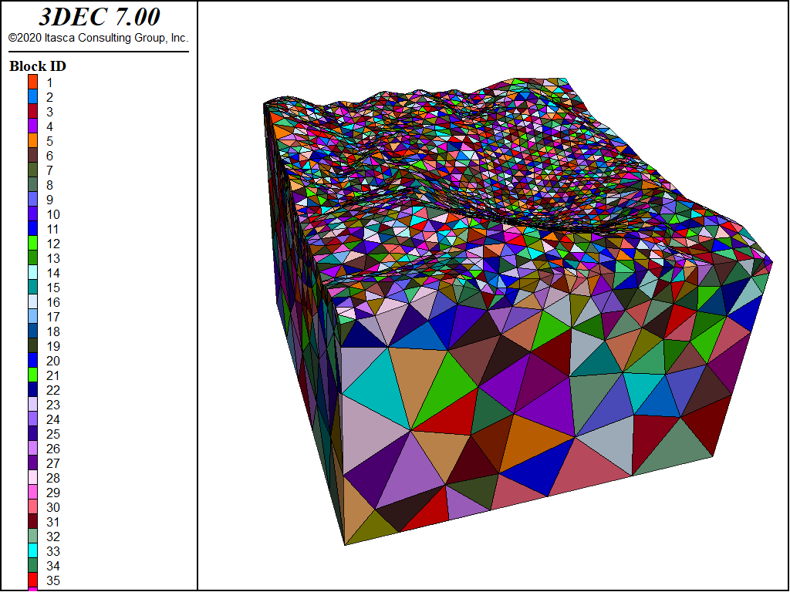
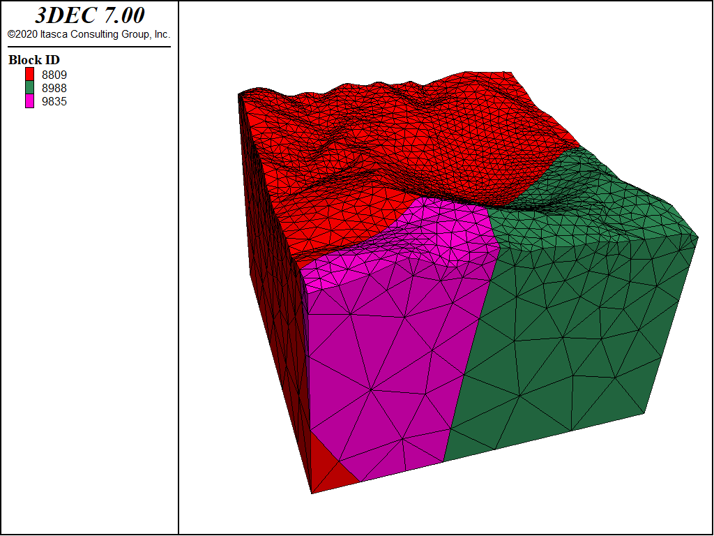
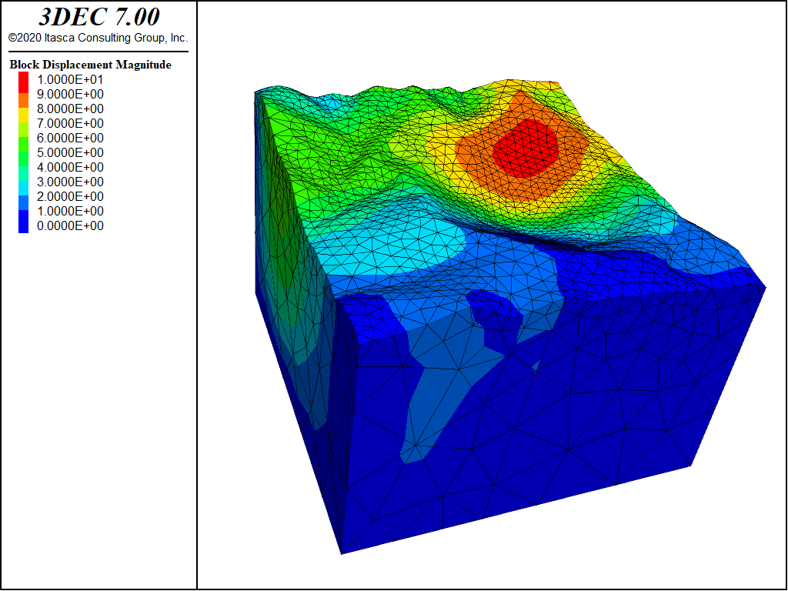
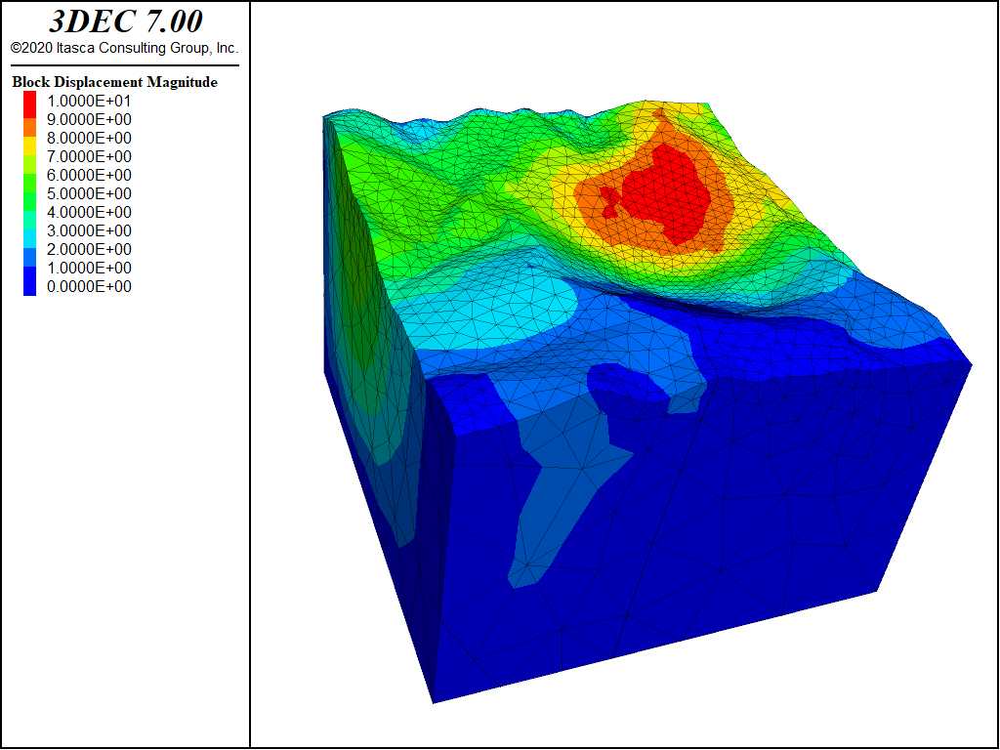

带面块体的露天矿
问题描述
注意
要在 3DEC 中查看此项目，请使用菜单命令 。选择“3DEC/ ExampleApplications/ Faceblock_pit”，然后选择“faceblock_pit.prj”进行加载。所用的主数据文件（main data files）显示在本示例的末尾。所有数据文件都可在该项目中找到。
本示例展示了用两种不同方式构建复杂地形模型的方法；（1）从 Griddle 导入四面体块体并连接；（2）从 Griddle 导入四面体块体并将其转换为网格单元。
当块体转换为网格单元时，会在各分组之间的每个三角形面上添加“面块体”，以实现接触检测和力计算。这样便可创建含凹形块体的模型。
即使增加了这些面块体，将块体转换为网格单元也比连接块体的运行速度快得多。
3DEC 模型
首先由数据文件nomerge.dat创建一个 3DEC 模型。导入 Griddle 网格，连接前的块体如图 1（Figure 1）所示。
随后将具有相同组名的块体连接起来。这样便留下了两条主要断层，如图 2（Figure 2）所示。
随后对块体划分网格（每个块体一个网格单元），赋予网格单元和节理属性，施加边界条件和初始条件，并打开重力。然后求解模型，并计算完成求解步骤所需的时间。位移如图 3（Figure 3）所示。


图 1：连接前露天矿模型中的块体。


图 2：连接后露天矿模型中的块体。


图 3：连接块体后露天矿模型在初始平衡时的位移。
随后运行相同的测试，但这一次，从 Griddle 导入的块体若具有相同的组名，则合并为一个大块体。每个四面体块体转换为一个网格单元。所得模型看起来与图 2（Figure 2）相同，只是现在仅有 3 个块体、每个含数千个网格单元，而不是数千个已连接的块体、每个含一个网格单元。
将模型运行至平衡，并记录所需时间。时间结果取决于所使用的计算机，但一般而言合并后模型的运行速度比节理模型快 2-3 倍。
位移结果如图 4（Figure 4）所示。显然，结果与图 3（Figure 3）基本相同。


图 4：合并块体后露天矿模型在初始平衡时的位移。
数据文件
nomerge.dat
model new
model large-strain on
;
program call 'Griddle-coarse'
;program call 'Griddle-fine'
;
block join range group '10001'
block join range group '10002'
block join range group '10003'
block zone gen edge 1000
;
block zone cmodel assign mohr-coulomb
block zone prop dens 2500 bulk 1e8 shear 0.6e8 coh 1e4 fric 35 ten 1e2
block contact jmodel assign mohr
block contact prop stiff-norm 1e9 stiff-shear 1e9 fric 30
block gridpoint apply vel-x 0 range pos-x -120
block gridpoint apply vel-x 0 range pos-x 2100
block gridpoint apply vel-y 0 range pos-y 1310
block gridpoint apply vel-y 0 range pos-y 3750
block gridpoint apply vel 0 0 0 range pos-z -500
model grav 0 0 -10
block insitu topo ratio-x 0.5 ratio-y 0.5
model save 'nomerge-ini'
================================
model rest 'nomerge-ini'
block contact mat-tab default prop stiff-norm 1e9 stiff-shear 1e9 fric 30
fish def time_ini
time0 = time.clock
end
fish def duration
duration = 0.01*(time.clock-time0)
end
[time_ini]
model solve
fish list [duration]
merge.dat
model new
model large-strain on
block merge-start
;program call 'Griddle-fine'
program call 'Griddle-coarse'
block merge-finish
block contact gen-sub
;
block zone cmodel assign mohr-coulomb
block zone prop dens 2500 bulk 1e8 shear 0.6e8 coh 1e4 fric 35 ten 1e2
block contact jmodel assign mohr
block contact prop stiff-norm 1e9 stiff-shear 1e9 fric 30
block gridpoint apply vel-x 0 range pos-x -120
block gridpoint apply vel-x 0 range pos-x 2100
block gridpoint apply vel-y 0 range pos-y 1310
block gridpoint apply vel-y 0 range pos-y 3750
block gridpoint apply vel 0 0 0 range pos-z -500
model grav 0 0 -10
block insitu topo ratio-x 0.5 ratio-y 0.5
model save 'merge-ini'
================================
model rest 'merge-ini'
block contact mat-tab default prop stiff-norm 1e9 stiff-shear 1e9 fric 30
fish def time_ini
time0 = time.clock
end
fish def duration
duration = 0.01*(time.clock-time0)
end
[time_ini]
model solve
fish list [duration]
| 这些内容对您有帮助吗？… 版权与免责声明 | FLAC3D © 2019, Itasca | 原文更新于 2020 年 10 月 8 日 |